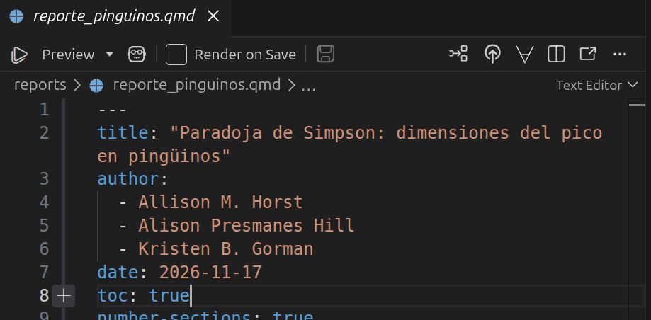

21 Bienvenidos a Quarto
Este capítulo se basa en (Posit, 2026), (Wickham, 2023, Capítulo 28) y (M. Horst et al., 2022) así como en la documentación oficial de quarto donde tiene como propósito introducir la forma de comunicar resultados a través del uso de Quarto e información de la base de datos penguins disponible en (Kaye et al., 2025) así como en el paquete datasets de base R.
Exploraremos los siguientes aspectos:
- ¿Qué es Quarto?
- ¿Cuál es la anatomía de un documento en extensión
.qmd?
Para desarrollar el contenido de este capítulo es necesario que descargues el archivo en extensión .qmd señalado a continuación:
Luego, genera una carpeta con el nombre reports y dentro de esta carpeta incluye el archivo reporte_pinguinos.qmd.
Además, es necesario que descargues los archivos en extensión .png señalados a continuación:


Luego, genera una carpeta con el nombre images y dentro de esta carpeta incluye los archivos culmen_depth_es.png y penguins.png.
Adicionalmente, es necesario que descargues los archivos en extensión .bib y .csl señalados a continuación:
Luego, genera una carpeta con el nombre references y dentro de esta carpeta incluye los archivos reporte-pinguinos.bib y apa.csl.
En caso que hayas seguido estas indicaciones, procede a crear una nueva carpeta llamada 021_intro-quarto-r y dentro de ella genera el archivo 001_intro-quarto.qmd, siguiendo las pautas de la Sección 4.4 pero con un archivo en extensión .qmd.
21.1 ¿Qué es Quarto?
Quarto es un sistema de publicación científica y técnica de código abierto que proporciona un marco unificado para el análisis de datos. Su propósito es combinar en un único archivo de texto plano 3 componentes (Posit, 2026):
- Texto narrativo: Redactado mediante Markdown.
- Código ejecutable: Escrito en lenguajes de programación como R, Python, Julia u Observable.
- Resultados dinámicos: Gráficos, tablas y estimaciones generados directamente al ejecutar el código.
Esta integración se basa en la idea de literate programming (en español programación literaria). En lugar de mantener un archivo, como por ejemplo en extensión .R, con comentarios dispersos o copiar y pegar resultados manualmente entre herramientas, el código y la narrativa se integran para que el documento se lea de principio a fin. De esa manera, se logra que los resultados se actualicen automáticamente y permanezcan siempre en sincronía con los datos (Posit, 2026; Wickham, 2023, Capítulo 28).
Ten en cuenta que Quarto es una herramienta independiente de R. Es decir, no es un paquete de R como por ejemplo tidyverse y puede ser utilizada de forma autónoma con respecto a cualquier otro lenguaje de programación, como R, Python o Julia. Por lo tanto, no encontrarás la documentación de Quarto en la Consola (en inglés Console) de R en el Panel (ver Figura 2.4) utilizando el operador de ayuda ? dentro de ella. Para consultar la documentación oficial, sintaxis y opciones de configuración, debes recurrir a la documentación señalada en Quarto.
21.1.1 Problemas que resuelve
En algunos flujos de trabajo, el análisis suele terminar copiando y pegando manualmente gráficos y valores desde el entorno de programación hacia un procesador de texto o diapositivas (Posit, 2026). Este proceso manual es propenso a errores y resulta ineficiente ya que si los datos cambian, es necesario repetir todo el procedimiento (Wickham, 2023, Capítulo 28).
Quarto soluciona esta dificultad al mantener el texto, el código y los resultados integrados en un único archivo así como aportando 3 beneficios (Posit, 2026):
- Reproducibilidad: los resultados provienen directamente de ejecutar el código. En ese sentido, otro individuo puede reconstruir el documento y obtener los mismos resultados.
- Actualización permanente: si se incorporan nuevos datos o se ajusta el código, solo se requiere volver a compilar el documento para que cada tabla, gráfico y valor se actualice.
- Archivos de texto plano: los documentos
.qmdson texto plano, lo que facilita editarlos y realizar seguimiento a los cambios mediante sistemas de control de versiones como Git.
21.1.2 Renderizar un documento
El proceso de transformar un archivo que combina texto y código en un producto final se conoce como renderizar (en inglés render) (Posit, 2026). Al renderizar, el archivo original en extensión .qmd permanece intacto, generando un nuevo archivo de salida con los resultados incorporados. En la Figura 21.1 se describe la secuencia de pasos que Quarto realiza durante este proceso:

.qmd hasta los formatos finales (team, 2026)
.qmd: es el archivo fuente en texto plano que contiene la combinación de texto narrativo en Markdown y los bloques de código.knitr: es el “motor” encargado de ejecutar secuencialmente cada una de las celdas de código presentes en el documento..md: a partir de la ejecución, se genera un archivo intermedio en formato Markdown que integra el texto original junto con las salidas generadas por el código, como por ejemplo tablas, figuras y valores numéricos.pandoc: es el conversor de documentos que toma el archivo.mdintermedio y lo traduce al formato final especificado, como por ejemplo páginas web HTML, documentos PDF o archivos de Microsoft Word y OpenDocument.
Para renderizar un documento de Quarto de acuerdo a lo descrito en la Figura 21.1 selecciona el ícono de archivos en la Barra de actividades y abre el archivo reporte_pinguinos.qmd utilizando la Barra lateral primaria (ver Figura 2.4) en la carpeta reports. En el Editor puedes renderizar el documento utilizando la opción Preview, tal como se señala en la Figura 21.2.

También puedes situar el cursor (|) sobre alguna parte del documento y presionar la combinación de teclas o utilizar el Terminal en el Panel ejecutando el siguiente comando, tal como se señala a continuación:
quarto render reports/reporte_pinguinos.qmdDe esa manera, en la Barra lateral primaria encontrarás que se crea un archivo adicional dentro de la carpeta reports con el nombre reporte_pinguinos.html. En ese sentido, se crea un archivo con extensión .html manteniendo intacto el archivo de texto plano reporte_pinguinos.qmd donde se completa el proceso señalado en la Figura 21.1.
21.1.3 Formatos de salida para documentos
Quarto incluye la posibilidad de renderizar documentos a múltiples formatos. Por el momento, en relación a reporte_pinguinos.qmd respecto a la Sección 21.1.2 se ha utilizado únicamente el formato html. Sin embargo, para la elaboración de documentos Quarto ofrece una amplia variedad de opciones de salida como html, pdf, docx, typst, odt y epub. En la Tabla 21.1 se presentan estos formatos junto con su descripción:
| Formato | Descripción |
|---|---|
html |
Páginas y documentos web basados en el estándar HTML5. Es el formato predeterminado en Quarto para publicar contenidos interactivos en línea. |
pdf |
Documentos basados en PDF y generados a través de LaTeX con control preciso de tipografía, márgenes, encabezados y citas bibliográficas. |
docx |
Documentos de procesamiento de texto para Microsoft Word basados en el estándar abierto Office Open XML (.docx). |
typst |
Sistema de composición tipográfica moderno y de código abierto desarrollado mediante Typst. Diseñado como una alternativa a LaTeX donde genera archivos PDF con tiempos de renderizado más rápido sin requerir una instalación previa de LaTeX. |
odt |
Documentos de texto basados en el estándar abierto OpenDocument (.odt) compatibles con procesadores de texto como LibreOffice Writer. |
epub |
Libros electrónicos en formato estándar EPUB diseñados para la lectura en dispositivos móviles, tabletas y lectores digitales. |
Para renderizar documentos en formato pdf es necesario contar con una distribución reciente de LaTeX. El equipo principal de Quarto sugiere utilizar TinyTeX, una distribución ligera basada en TeX Live. En caso de que no tengas una distribución de LaTeX instalada en tu sistema, puedes instalar TinyTeX utilizando el Terminal del Panel (ver Figura 2.4) en Positron mediante la ejecución del siguiente comando:
quarto install tinytexEn la Sección 21.2.1 explorarás la posibilidad de renderizar un documento en diversos formatos donde en particular para el formato pdf se debe tener en cuenta la Precaución 21.1. Por ahora, puedes descargar a continuación los reportes asociados con reporte_pinguinos.qmd en formatos docx, odt y pdf para examinar el resultado final respecto a otras opciones de acuerdo a lo señalado en Figura 21.1:
21.2 Anatomía de un documento de Quarto
Un archivo con extensión .qmd está compuesto de 3 elementos. A continuación se señala una versión reducida de reporte_pinguinos.qmd para ilustrar cada uno de estos aspectos:
---
title: "Paradoja de Simpson: dimensiones del pico en pingüinos"
author:
- Allison M. Horst
- Alison Presmanes Hill
- Kristen B. Gorman
date: 2026-11-17
format:
html:
code-fold: true
embed-resources: true
---
```{r}
#| label: cargar-paquetes
#| message: false
library(tidyverse)
```
# Introducción
La **paradoja de Simpson** es un fenómeno estadístico en el cual una ... Al principio existen diferentes símbolos que puede que no comprendas pero estos se pueden separar en 3 elementos, tal como se muestra en la Tabla 21.2:
| Elemento | Símbolo | Función |
|---|---|---|
| Encabezado YAML | El primer bloque entre las 2 líneas --- |
Fija las opciones que se aplican de manera global al documento como el título, los autores, la fecha, el formato y las opciones específicas de ese formato tales como code-fold: true y embed-resources: true |
| Texto Markdown | Texto como “es un fenómeno estadístico en el cual una …” con símbolos como # y ** |
Estructura y da formato al texto narrativo para comunicar y contextualizar los resultados |
| Celdas de código | Bloque que empieza con ```{r} y termina con ``` |
Genera la renderización de los resultados como producto de la ejecución del código de acuerdo a las opciones fijadas como por ejemplo #| message: false y la aplicación de un identificador como #| label: cargar-paquetes |
Si deseas puedes copiar el código mencionado anteriormente en 001_intro-quarto.qmd teniendo en cuenta lo mencionado en la Nota 21.1 para experimentar mediante la modificación del título, los autores o la fecha. En las siguientes secciones se explorará con más detalle otros aspectos de cada uno de los 3 elementos mencionados en la Tabla 21.2.